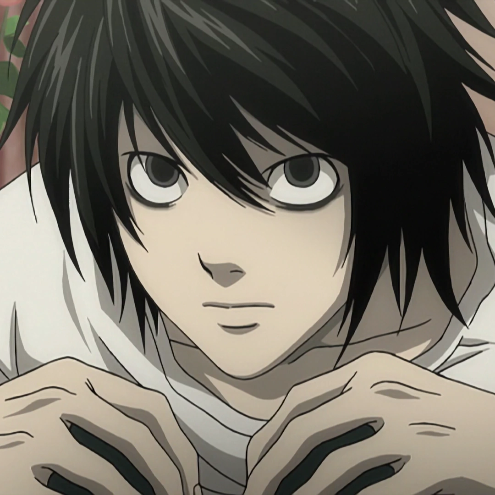

L Lawliet

El Detective Legendario
L Lawliet es el antagonista heroico y deuteragonista de Death Note. Es considerado el mejor detective del mundo, conocido simplemente como "L". Con una inteligencia extraordinaria, L es llamado para resolver el caso Kira.
Con sus peculiares hábitos y su brillante mente deductiva, L se convierte en el principal obstáculo para Light Yagami en su misión de convertirse en el dios del nuevo mundo. Su confrontación intelectual con Light es uno de los aspectos más fascinantes de la serie.
"No hay nada ni bueno ni malo. El conocimiento en sí mismo no es pecado."
Características
- Nombre completo: L Lawliet (エル・ローライト)
- Alias: L, Ryuzaki, Hideki Ryuga, Eraldo Coil, Deneuve
- Ocupación: Detective
- Inteligencia: Extraordinaria
- Personalidad: Excéntrico, Analítico, Inexpresivo